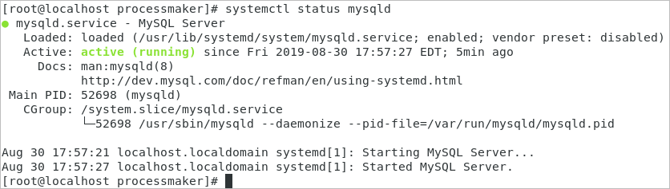

- Overview
- Requirements
- Summary
- Disclaimer
- Environment
- Step 1: Update your Server
- Step 2: Remove MariaDB
- Step 3: Install MySQL 5.7.x
- Step 4: Install Apache 2.4
- Step 5: Install and Configure PHP 7.3.x + PHP-FPM + OpCache
- Step 6: Apache Server Configuration to Include PHP-FPM
- Step 7: Install Firewall and Open ProcessMaker's Port
- Step 8: Disable SELinux
- Install and Configure Supervisor
- Task Scheduler configuration
- Database Integrations
- Configuration and ProcessMaker Installation
Overview
Stack 265 provides detailed information about the database and application server configurations required to correctly install the following versions of ProcessMaker on the platform CentOS/RHEL 7.x (Latest Version) under the Apache web server.
Requirements
ProcessMaker Compatibility
This stack is fully compatible with the following ProcessMaker version:
- ProcessMaker 3.4.6 and later
Stack 265 is fully supported by ProcessMaker and it has been tested by the Quality Control team.
Summary
| Platform | Database | PHP |
|---|---|---|
| CentOS/RHEL 7.x (Latest version) | MySQL 5.7.x | 7.3.x |
| Web Server | Filesystem | Architecture |
| Apache 2.4 | xfs | 64-bit |
Disclaimer
The stack procedure and references described below are used by ProcessMaker in its cloud environment and it works appropriately in cloud configurations. If this stack is implemented on-premises, ProcessMaker Inc. does not guarantee the correct functionality of the stack.
Environment
Assuming that the last version of CentOS 7.x Core or Desktop is already installed in your computer and has the proper permissions by typing the command sudo su and the administrator password entered, it is posible to run the following commands to have the stack ready to install ProcessMaker.
Step 1: Update your Server
Make sure that your server is running the latest version.
Warning: Depending on your CentOS version, the server update might take a long time to complete the update.
Step 2: Remove MariaDB
By default CentOS 7.x comes with some modules of MariaDB installed. So we need to uninstall them.
Step 3: Install MySQL 5.7.x
To install MySQL 5.7.x, follow the next steps:
1. Run the command lines to download the repositories:
2. Start the MySQL service and set it to start automatically at boot.
3. Make sure the mysql service is running by checking its status.
The status of the mysql service should be "active (running)":

MySQL Configuration
Before using MySQL, follow the next steps:
1. A temporary password is already defined, so you need to check it before you run the mysql_secure_installation. To do this, use the following command:
Use this temporary password when running mysql_secure_installation.

2. Use the mysql_secure_installation command to set up a secure database environment and establish a root password to use in the ProcessMaker installation.
The wizard installation begins.

3. Follow the wizard's instructions to secure MySQL.
Warning: The default password policy implemented by validate_password of MySQL 5.7 requires that passwords contain at least one upper case letter, one lower case letter, one digit, and one special character, and also that the total password length is at least 8 characters. To know more about validate_password, see The Password Validation Plugin.
Enter the temporary root password. If the temporary password has expired, you need to enter a new password.

4. Change the root password. If it was defined previously in step three, skip this step.

5. Confirm to remove anonymous users.

6. Confirm to disable the remote root login.

If MySQL is running on another server, you must create a new user and provide this user with the permissions to access.
7. Confirm to remove the test database.

8. Reload privilege tables.

The MySQL installation is now secure.
9. Turn off Derived Table Merging Flags.
10. Disable MySQL Strict Mode on the Server.
11. Restart the MySQL service.
Step 4: Install Apache 2.4
mod_ssl is an Apache module that provides SSL v2/v3 and TLS v1 support for the Apache HTTP server necessary for ProcessMaker. Run the commands in the following steps to install Apache 2.4 and the SSL module:
1. Install Apache and SSL module.
2. ProcessMaker needs to use modules on the Apache web server. Enable these Modules:
3. Start the Apache service and set it to start automatically at boot.
4. Make sure the httpd service is running by checking its status.
The status of the httpd service should be "active (running)":

Step 5: Install and Configure PHP 7.3.x + PHP-FPM + OpCache
To install and configure PHP 7.3.x + PHP-FPM + OpCache, follow the next steps:
1. Add the EPEL (CentOS 7.x) repositories or RedHat ones to install PHP.
2. Install PHP and its modules.
Check if all the PHP modules were installed.
The outcome will be similar to the following:
3. Start and enable the PHP-FPM service.
4. In the php.ini file, set the standard ProcessMaker configurations.
Note:
The memory_limit should be set to 256M as the minimum value. For more information, check how to Increase The Memory Limit.
5. Set OpCache configurations.
Note:
If you are upgrading from a server that has the Enhanced Login plugin installed, set the following variable in the php.ini file:
6. Create the processmaker.conf file to include PHP-FPM configuration.
7. Include the following to the configuration file and save the file.
Configure PHP Default Settings for Production Environments
The default configuration of PHP should be able to run on ProcessMaker; however, for production environments it is recommended to check the following settings to see if PHP's configuration file php.ini has been modified. Log in as the root user and edit PHP's configuration file php.ini following these steps:
1. Open the file php.ini
2. Search for the following lines and edit them using the following configuration:
Step 6: Apache Server Configuration to Include PHP-FPM
To configure Apache to work with ProcessMaker, follow the next steps:
2. Create the pmos.conf file.
3. The pmos.conf configuration file needs to have:
4. Restart Apache.
Step 7: Install Firewall and Open ProcessMaker's Port
By default, CentOS 7.x can not work without a firewall, therefore it is recommended to install Firewalld so it can be easily configured. Firewalld is a dynamic daemon that manages a firewall with support for networks zones. To install it run the following steps:
1. Install Firewalld.
2. Set the service to start automatically.
3. Open the port where ProcessMaker will run, which is port 80 by default. To use a port other than port 80, it is necessary to change the port number using the following command.
Step 8: Disable SELinux
SELinux causes many problems, which it is often easier to disable. Run the next commands to disable SELinux:
Install and Configure Supervisor
To install and configure a Supervisor, follow the next steps:
Note: After every command execution, verify if there are error or warning messages. This may be due to wrong file permissions.
Open a terminal and run as a supervisor user by writing the following.
su or sudo -i Install and enable the Supervisor.
yum -y install supervisor systemctl start supervisord systemctl enable supervisord Create the laravel-worker-workflow.ini file in the /etc/supervisord.d/ folder.
nano /etc/supervisord.d/laravel-worker-workflow.ini Add the following lines and save the file.
[program:laravel-worker-workflow] user=apache directory= /opt/processmaker/ command= /opt/processmaker/processmaker artisan queue:work --workspace=workflow stdout_logfile= /opt/processmaker/worker-workflow.log autostart=true autorestart=true If you have two workspaces or more, add the following lines. For example, the workflow and sample workspaces.
[program:laravel-worker-workflow] user=apache directory= /opt/processmaker/ command= /opt/processmaker/processmaker artisan queue:work --workspace=workflow stdout_logfile= /opt/processmaker/worker-workflow.log autostart=true autorestart=true [program:laravel-worker-sample] user=apache directory= /opt/processmaker/ command= /opt/processmaker/processmaker artisan queue:work --workspace=sample stdout_logfile= /opt/processmaker/worker-sample.log autostart=true autorestart=true Enable the laravel-worker-workflow configuration.
supervisorctl reread supervisorctl update sudo supervisorctl stop all sudo supervisorctl start all sudo systemctl stop supervisord.service sudo systemctl start supervisord.service Restart the Supervisor service:
sudo systemctl stop supervisord.service sudo systemctl start supervisord.service sudo systemctl status supervisord.service
The queue work is ready to run.
Take into account the following:
- Depending on the distribution, the directory route must maintain its order. This will specify the processmaker workspace.
- Verify that the configured log file has permissions in the stdout_logfile route. It is recommended that the log file (stdout_logfile) be located within the shared folder of processmaker: /shared/worker.log. This may not be advisable if your environment has many workspaces that have a large workload, your log would be lost in time.
- The parameters of the command route must be valid according to the workload. For more information consult the Laravel documentation.
Task Scheduler configuration
Available Version: As of ProcessMaker 3.5.0.
Follow the next steps to define the time execution of the ProcessMaker Cron actions in the Laravel Queue Jobs for the Task scheduler configuration:
-
Make sure you can run Cron Scripts.
-
Open a terminal and run:
crontab -e -
Add the following line and save the file:
* * * * * cd /opt/processmaker && ./processmaker artisan schedule:run --workspace=workflow-name --user=server-username >> /dev/null 2>&1 Where:
- workflow-name: Name of the ProcessMaker workspace.
- server-username: Name of the apache server user.
For example, the following configuration is using the workflow workspace and the apache user:
* * * * * cd /opt/processmaker && ./processmaker artisan schedule:run --workspace=workflow --user=apache >> /dev/null 2>&1 Note: To work accordingly with the time set in the Task Scheduler, this cron must be run every minute as in the example.
Database Integrations
This stack supports the following database integrations:
Oracle
To install an Oracle database integration, follow the next steps:
Download the Oracle client for Linux and install it:
rpm -i oracle-instantclient12.2-basic-12.2.0.1.0-1.x86_64.rpm rpm -i oracle-instantclient12.2-devel-12.2.0.1.0-1.x86_64.rpm Set the global variables in the system:
export LD_LIBRARY_PATH=/usr/lib/oracle/12.2/client64/lib export ORACLE_HOME=/usr/lib/oracle/12.2/client64/ Install the dependencies:
yum -y install cc gcc php-pear php-devel Install the libraries using
pecl:pecl install oci8 # When the installer requests the Oracle Home, provide the path to the ORACLE_HOME directory. Use instantclient,/path/to/instant/client/lib if you are compiling with Oracle Instant Client [autodetect] : instantclient,/usr/lib/oracle/12.2/client64/lib In the /etc/php.ini file, add the extension line:
extension=oci8.so Restart the Apache and PHP services:
service httpd restart & service php-fpm restart
Microsoft SQL Server
To install a Microsoft SQL Server database integration, follow the next steps:
Import the repository:
curl https://packages.microsoft.com/config/rhel/7/prod.repo > /etc/yum.repos.d/mssql-release.repo Remove the
unixODBCand update the system:yum remove unixODBC yum update ACCEPT_EULA=Y yum install msodbcsql-13.0.1.0-1 mssql-tools-14.0.2.0-1 yum install unixODBC-utf16-devel ln -sfn /opt/mssql-tools/bin/sqlcmd-13.0.1.0 /usr/bin/sqlcmd ln -sfn /opt/mssql-tools/bin/bcp-13.0.1.0 /usr/bin/bcp Install the dependencies:
yum install gcc-c++ libstdc++ -y Install the libraries using
pecl:pecl install sqlsrv pecl install pdo_sqlsrv In the /etc/php.ini file, add the extension lines:
extension=sqlsrv.so extension=pdo_sqlsrv.so Restart the Apache and PHP services:
service httpd restart & service php-fpm restart
PostgreSQL
To install a PostgreSQL database integration, follow the next steps:
-
Install the dependencies:
yum install php-pgsql php-pdo_pgsql -
Restart the services:
service httpd restart & service php-fpm restart
Configuration and ProcessMaker Installation
To learn how to install and configure ProcessMaker, read Configuration and ProcessMaker Installation.